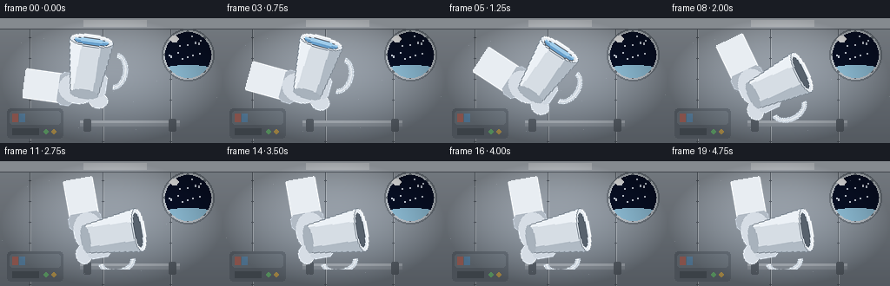
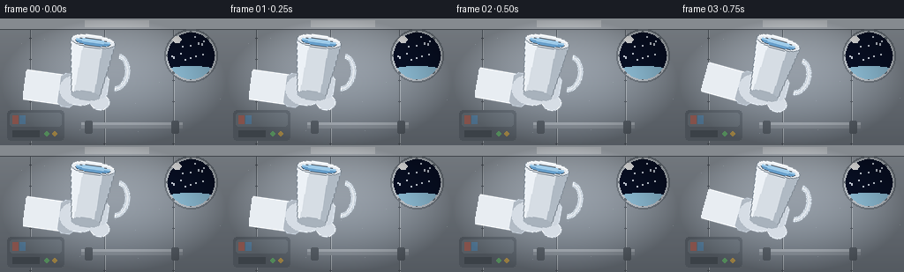

CODING AGENTS AS PIXEL WORLD MODELS
traex/Seed-2.1-Pro-0915 · phygen_001
点击播放 · 原生 RGB 像素
逐轮保存的候选
回放视频、检查图与代码变化。
每份候选均可单独播放。实际图片检查记录在下方工具轨迹中。
候选 01播放与检查图
点击播放 · 原生 RGB 像素

展开代码变化
--- 上一保存版本
+++ 本次保存版本
@@ -0,0 +1,359 @@
+"""Procedural text-to-video generator.
+
+Scene: a cup of water is slowly poured out inside a space station.
+In microgravity the liquid does not fall; it leaves the rim as a stream,
+collects into a wobbling floating blob, pinches off, and divides into
+smaller drifting droplets.
+
+Pure numpy + PIL: analytic SDF water with fake refraction/fresnel/specular,
+PIL-drawn station background and a rotated cup/glove layer.
+"""
+import json
+import math
+
+import numpy as np
+from PIL import Image, ImageDraw
+
+import artifact_io
+
+W, H, N, FPS = 256, 144, 20, 4.0
+RNG = np.random.default_rng(20261110)
+
+
+# --------------------------------------------------------------------------
+# Small math helpers
+# --------------------------------------------------------------------------
+def smoothstep(a, b, x):
+ t = np.clip((x - a) / (b - a), 0.0, 1.0)
+ return t * t * (3.0 - 2.0 * t)
+
+
+def smin(a, b, k):
+ """Polynomial smooth minimum of two SDF fields."""
+ h = np.clip(0.5 + 0.5 * (b - a) / k, 0.0, 1.0)
+ return b + h * (a - b) - k * h * (1.0 - h)
+
+
+def rot2(theta):
+ c, s = math.cos(theta), math.sin(theta)
+ return np.array([[c, -s], [s, c]], dtype=float)
+
+
+def bilinear(img, xs, ys):
+ h, w = img.shape[:2]
+ xs = np.clip(xs, 0, w - 1.001)
+ ys = np.clip(ys, 0, h - 1.001)
+ x0 = np.floor(xs).astype(int)
+ y0 = np.floor(ys).astype(int)
+ x1 = np.minimum(x0 + 1, w - 1)
+ y1 = np.minimum(y0 + 1, h - 1)
+ fx = xs - x0
+ fy = ys - y0
+ top = img[y0, x0] * (1 - fx[..., None]) + img[y0, x1] * fx[..., None]
+ bot = img[y1, x0] * (1 - fx[..., None]) + img[y1, x1] * fx[..., None]
+ return top * (1 - fy[..., None]) + bot * fy[..., None]
+
+
+# --------------------------------------------------------------------------
+# Station interior background (static)
+# --------------------------------------------------------------------------
+def make_background():
+ img = Image.new("RGB", (W, H))
+ d = ImageDraw.Draw(img)
+
+ # Wall vertical gradient.
+ top = np.array([172, 180, 189], dtype=float)
+ bot = np.array([124, 133, 143], dtype=float)
+ for y in range(H):
+ t = y / (H - 1)
+ d.line([(0, y), (W, y)], fill=tuple((top * (1 - t) + bot * t).astype(int)))
+
+ # Overhead light panel and ceiling band.
+ d.rectangle([0, 0, W, 12], fill=(196, 203, 211))
+ d.rectangle([96, 2, 168, 9], fill=(228, 233, 238))
+ d.line([0, 12, W, 12], fill=(96, 104, 113))
+
+ # Panel seams with rivets.
+ for sx in (34, 118, 196):
+ d.line([(sx, 13), (sx, H)], fill=(104, 112, 121))
+ d.line([(sx + 1, 13), (sx + 1, H)], fill=(186, 193, 200))
+ for ry in range(22, H, 24):
+ d.ellipse([sx - 1, ry - 1, sx + 1, ry + 1], fill=(92, 99, 108))
+
+ # Utility locker, lower left.
+ d.rounded_rectangle([8, 104, 72, 138], radius=4, fill=(110, 119, 129))
+ d.rounded_rectangle([11, 107, 69, 122], radius=3, fill=(126, 136, 146))
+ d.rectangle([14, 127, 44, 134], fill=(88, 96, 105))
+ d.ellipse([50, 128, 55, 133], fill=(120, 200, 130)) # status LED
+ d.ellipse([59, 128, 64, 133], fill=(214, 176, 92))
+ d.rectangle([14, 110, 20, 119], fill=(196, 120, 110)) # label stripe
+ d.rectangle([22, 110, 28, 119], fill=(110, 160, 200))
+
+ # Horizontal handrail.
+ d.rectangle([92, 118, 206, 124], fill=(150, 158, 167))
+ d.rectangle([92, 118, 206, 120], fill=(180, 187, 195))
+ for mx in (100, 198):
+ d.rounded_rectangle([mx - 4, 116, mx + 4, 130], radius=2, fill=(96, 104, 113))
+
+ # Porthole window with space and an Earth limb.
+ cx, cy, r = 216, 42, 26
+ d.ellipse([cx - r - 4, cy - r - 4, cx + r + 4, cy + r + 4], fill=(202, 209, 216))
+ d.ellipse([cx - r - 4, cy - r - 4, cx + r + 4, cy + r + 4], outline=(120, 128, 137), width=2)
+ for k in range(8): # ring bolts
+ a = k * math.tau / 8
+ bx, by = cx + (r + 0.5) * math.cos(a), cy + (r + 0.5) * math.sin(a)
+ d.ellipse([bx - 1.4, by - 1.4, bx + 1.4, by + 1.4], fill=(110, 118, 127))
+
+ glass = Image.new("RGB", (W, H), (0, 0, 0))
+ gd = ImageDraw.Draw(glass)
+ gd.ellipse([cx - r, cy - r, cx + r, cy + r], fill=(9, 17, 40))
+ # Earth limb peeking in at the bottom of the window.
+ gd.ellipse([cx - 46, cy + 16, cx + 46, cy + 78], fill=(38, 92, 150))
+ gd.ellipse([cx - 46, cy + 14, cx + 46, cy + 66], fill=(74, 138, 196))
+ gd.ellipse([cx - 46, cy + 12, cx + 46, cy + 40], fill=(150, 200, 226))
+ rng = np.random.default_rng(7)
+ for _ in range(26): # stars, clipped to the window circle
+ sx = cx + rng.uniform(-r + 3, r - 3)
+ sy = cy + rng.uniform(-r + 3, r - 2)
+ if (sx - cx) ** 2 + (sy - cy) ** 2 < (r - 3) ** 2 and sy < cy + 8:
+ gd.ellipse([sx - 0.6, sy - 0.6, sx + 0.6, sy + 0.6], fill=(220, 228, 240))
+ mask = Image.new("L", (W, H), 0)
+ ImageDraw.Draw(mask).ellipse([cx - r, cy - r, cx + r, cy + r], fill=255)
+ img.paste(glass, (0, 0), mask)
+ d.ellipse([cx - r + 5, cy - r + 4, cx - r + 15, cy - r + 11], fill=(255, 255, 255))
+
+ arr = np.asarray(img).astype(float)
+
+ # Soft radial vignette.
+ yy, xx = np.mgrid[0:H, 0:W]
+ v = np.clip(1.0 - 0.32 * (((xx - W / 2) / (W / 2)) ** 2 + ((yy - H / 2) / (H / 2)) ** 2), 0.68, 1.0)
+ arr *= v[..., None]
+ return np.clip(arr, 0, 255).astype(np.uint8)
+
+
+# --------------------------------------------------------------------------
+# Cup + glove layer (drawn upright, then rotated per frame)
+# --------------------------------------------------------------------------
+LW, LH = 150, 130
+PIVOT_LOCAL = np.array([70.0, 95.0])
+RIM_LOCAL = np.array([70.0, 28.0])
+
+
+def make_cup_layer(water_level):
+ """water_level in [0,1]: fraction of the cup interior filled."""
+ layer = Image.new("RGBA", (LW, LH), (0, 0, 0, 0))
+ d = ImageDraw.Draw(layer)
+
+ # Suit sleeve and cuff entering from the left.
+ d.rounded_rectangle([-6, 72, 54, 106], radius=10, fill=(232, 237, 242, 255))
+ d.rounded_rectangle([40, 70, 58, 108], radius=6, fill=(178, 187, 197, 255))
+ # Glove mitten and thumb behind the cup body.
+ d.ellipse([40, 70, 84, 104], fill=(214, 221, 229, 255))
+ d.ellipse([76, 88, 98, 106], fill=(214, 221, 229, 255))
+ d.rounded_rectangle([80, 66, 94, 92], radius=6, fill=(206, 214, 223, 255))
+
+ # Handle first so the body overlaps its inner edge.
+ d.arc([86, 40, 116, 82], start=-85, end=85, fill=(198, 207, 216, 255), width=6)
+ d.arc([88, 42, 114, 80], start=-85, end=85, fill=(226, 232, 238, 255), width=2)
+
+ # Cup body: truncated cone.
+ body = [(45, 32), (95, 32), (86, 92), (54, 92)]
+ d.polygon(body, fill=(214, 221, 228, 255))
+ d.polygon([(45, 32), (59, 32), (56, 92), (54, 92)], fill=(236, 241, 246, 255))
+ d.polygon([(82, 32), (95, 32), (86, 92), (80, 92)], fill=(176, 186, 196, 255))
+ d.line(body + [body[0]], fill=(128, 138, 148, 255), width=1)
+ d.ellipse([54, 87, 86, 97], fill=(168, 178, 188, 255))
+
+ # Rim and interior opening.
+ d.ellipse([45, 23, 95, 37], fill=(228, 234, 240, 255), outline=(128, 138, 148, 255))
+ d.ellipse([50, 27, 90, 35], fill=(88, 98, 109, 255))
+ if water_level > 0.02:
+ # Visible water surface through the opening.
+ d.ellipse([51, 28, 89, 34], fill=(103, 158, 202, 255))
+ d.ellipse([51, 28, 89, 31], fill=(158, 202, 232, 255))
+ if water_level < 0.98:
+ d.ellipse([51, 28 + 5 * (1 - water_level), 89, 35], fill=(88, 98, 109, 255))
+ d.ellipse([51, 28, 89, 34], fill=(103, 158, 202, 255))
+ d.ellipse([51, 28, 89, 31], fill=(158, 202, 232, 255))
+ d.arc([45, 23, 95, 37], start=200, end=340, fill=(245, 249, 252, 255), width=2)
+ return layer
+
+
+def place_cup(canvas_rgb, theta, water_level):
+ layer = make_cup_layer(water_level)
+ c, s = math.cos(theta), math.sin(theta)
+ px, py = PIVOT_LOCAL
+ # Output->input affine for content rotated clockwise by theta.
+ matrix = (c, s, px - c * px - s * py,
+ -s, c, py + s * px - c * py)
+ rotated = layer.transform((LW, LH), Image.AFFINE, matrix,
+ resample=Image.Resampling.BICUBIC)
+ screen_pivot = np.array([96.0, 90.0])
+ pos = tuple((screen_pivot - PIVOT_LOCAL).astype(int))
+ base = Image.fromarray(canvas_rgb).convert("RGBA")
+ base.alpha_composite(rotated, pos)
+ return np.asarray(base.convert("RGB")), screen_pivot
+
+
+# --------------------------------------------------------------------------
+# Water: metaball SDF with wobble, fake refraction / fresnel / specular
+# --------------------------------------------------------------------------
+def circle_sdf(x, y, cx, cy, r, wobble=0.0, phase=0.0):
+ dx, dy = x - cx, y - cy
+ dist = np.hypot(dx, dy)
+ ang = np.arctan2(dy, dx)
+ rr = r * (1.0 + wobble * (0.7 * np.sin(3 * ang + phase)
+ + 0.3 * np.sin(5 * ang - 0.7 * phase)))
+ return dist - rr
+
+
+def capsule_sdf(x, y, p0, p1, r):
+ pa = np.stack([x - p0[0], y - p0[1]], axis=-1)
+ ba = p1 - p0
+ h = np.clip((pa @ ba) / np.dot(ba, ba), 0.0, 1.0)
+ q = pa - h[..., None] * ba
+ return np.hypot(q[..., 0], q[..., 1]) - r
+
+
+def render_water(canvas, blobs, stream):
+ h, w = canvas.shape[:2]
+ yy, xx = np.mgrid[0:h, 0:w].astype(float)
+ field = np.full((h, w), np.inf)
+
+ for cx, cy, r, wob, phase in blobs:
+ sdf = circle_sdf(xx, yy, cx, cy, r, wob, phase)
+ field = smin(field, sdf, k=4.5)
+ if stream is not None:
+ p0, p1, rs = stream
+ field = smin(field, capsule_sdf(xx, yy, p0, p1, rs), k=3.0)
+
+ inside = field < 0.0
+ if not inside.any():
+ return canvas
+
+ gy, gx = np.gradient(field)
+ norm = np.maximum(np.hypot(gx, gy), 1e-6)
+ nx, ny = gx / norm, gy / norm
+ nz = np.sqrt(np.clip(1.0 - nx ** 2 - ny ** 2, 0.0, 1.0))
+
+ # Refraction: bend the background sample along the 2D normal.
+ refr = bilinear(canvas.astype(float), xx - nx * 5.0, yy - ny * 5.0)
+ depth = np.clip(-field / 16.0, 0.0, 1.0)
+ tint = np.array([0.78, 0.90, 0.99])
+ color = refr * tint + depth[..., None] * np.array([8.0, 20.0, 34.0])
+
+ # Fresnel rim.
+ fres = (1.0 - nz) ** 2
+ color += fres[..., None] * np.array([150.0, 205.0, 230.0]) * 0.85
+
+ # Blinn-Phong specular, key light from upper left.
+ lx, ly, lz = -0.45, -0.78, 0.0
+ hx, hy, hz = lx, ly, 1.0 + lz
+ hn = math.hypot(hx, hy, hz)
+ hx, hy, hz = hx / hn, hy / hn, hz / hn
+ ndoth = np.clip(nx * hx + ny * hy + nz * hz, 0.0, 1.0)
+ spec = ndoth ** 42
+ soft = ndoth ** 7
+ color += (spec[..., None] * 235.0 + soft[..., None] * 28.0)
+
+ alpha = np.clip(0.10 + 0.82 * fres + 0.92 * spec + 0.10 * depth, 0.0, 0.97)
+ a = (alpha * inside)[..., None]
+ out = canvas.astype(float) * (1 - a) + np.clip(color, 0, 255) * a
+ return np.clip(out, 0, 255).astype(np.uint8)
+
+
+# --------------------------------------------------------------------------
+# Per-frame scene choreography
+# --------------------------------------------------------------------------
+def choreography(frame):
+ f = float(frame)
+ theta = math.radians(8.0 + 72.0 * smoothstep(1.0, 11.0, f))
+ pivot = np.array([96.0, 90.0])
+ rim = pivot + rot2(theta) @ (RIM_LOCAL - PIVOT_LOCAL)
+ pour_dir = rot2(theta) @ np.array([0.0, -1.0])
+
+ # Water visible inside the cup only while it is still mostly upright.
+ water_level = float(1.0 - smoothstep(2.0, 7.0, f))
+
+ blobs = []
+ stream = None
+
+ if f >= 2.0:
+ grow = smoothstep(2.0, 12.0, f)
+ radius = 2.0 + 13.5 * grow
+ dist = 4.0 + 38.0 * smoothstep(2.0, 12.0, f)
+ if f > 12.0:
+ dist += (f - 12.0) * 2.3
+ wobble_amp = 0.07 * (1.0 - smoothstep(12.0, 19.0, f)) + 0.02
+ center = rim + pour_dir * dist
+ center[1] += 2.2 * math.sin(f * 0.9)
+ phase = f * 1.1
+
+ if f < 16.0:
+ blobs.append((center[0], center[1], radius, wobble_amp, phase))
+ else:
+ # The free blob elongates and divides into two.
+ split = smoothstep(16.0, 19.0, f)
+ off = 4.0 + 10.0 * split
+ r1 = radius * (0.82 - 0.05 * split)
+ r2 = radius * (0.48 + 0.08 * split)
+ c1 = center - pour_dir * off * 0.6
+ c2 = center + pour_dir * off
+ blobs.append((c1[0], c1[1], r1, wobble_amp, phase))
+ blobs.append((c2[0], c2[1], r2, wobble_amp * 1.3, phase + 1.7))
+
+ # Narrowing stream while still pouring; pinched off after frame 11.
+ if f <= 11.5:
+ rs = 3.1 - 2.5 * smoothstep(3.0, 11.5, f)
+ anchor = center - pour_dir * (radius * 0.8)
+ stream = (rim.copy(), anchor, max(rs, 0.55))
+
+ # Satellite droplets born when the stream pinches, drifting on their own.
+ droplets = []
+ if f >= 12.0:
+ age = f - 12.0
+ rng = np.random.default_rng(31)
+ for k in range(5):
+ along = rng.uniform(6.0, 34.0) + age * rng.uniform(0.8, 1.8)
+ side = rng.uniform(-7.0, 7.0) + math.sin(age + k) * 1.4
+ perp = np.array([-pour_dir[1], pour_dir[0]])
+ pos = rim + pour_dir * along + perp * side
+ r = rng.uniform(1.2, 2.6)
+ droplets.append((pos[0], pos[1], r, 0.10, f * 0.8 + k))
+
+ return theta, water_level, blobs + droplets, stream
+
+
+def add_dust(frame_rgb, f):
+ """A few slow-drifting cabin dust motes for subtle life."""
+ out = frame_rgb.astype(float)
+ rng = np.random.default_rng(99)
+ for k in range(12):
+ bx = rng.uniform(0, W)
+ by = rng.uniform(16, H - 8)
+ x = (bx + f * rng.uniform(0.4, 1.1)) % W
+ y = by + math.sin(f * 0.7 + k) * 2.0
+ xi, yi = int(round(x)), int(round(y))
+ if 0 <= xi < W and 0 <= yi < H:
+ out[yi, xi] = out[yi, xi] * 0.82 + np.array([214, 222, 230]) * 0.18
+ return np.clip(out, 0, 255).astype(np.uint8)
+
+
+def generate():
+ background = make_background()
+ frames = []
+ for f in range(N):
+ frame = add_dust(background, f)
+ theta, water_level, blobs, stream = choreography(f)
+ frame, _ = place_cup(frame, theta, water_level)
+ frame = render_water(frame, blobs, stream)
+ frames.append(frame)
+ return np.stack(frames).astype(np.uint8)
+
+
+if __name__ == "__main__":
+ spec = json.load(open("task_spec.json"))
+ frames = generate()
+ assert frames.shape == (N, H, W, 3), frames.shape
+ artifact_io.save(frames, ".")
+ print(f"Saved {frames.shape[0]} frames at {spec['width']}x{spec['height']}, {spec['fps']} fps")
候选 02播放与检查图
点击播放 · 原生 RGB 像素

展开代码变化
--- 上一保存版本
+++ 本次保存版本
@@ -218,14 +218,18 @@
def render_water(canvas, blobs, stream):
h, w = canvas.shape[:2]
yy, xx = np.mgrid[0:h, 0:w].astype(float)
- field = np.full((h, w), np.inf)
+ field = None
for cx, cy, r, wob, phase in blobs:
sdf = circle_sdf(xx, yy, cx, cy, r, wob, phase)
- field = smin(field, sdf, k=4.5)
+ field = sdf if field is None else smin(field, sdf, k=4.5)
if stream is not None:
p0, p1, rs = stream
- field = smin(field, capsule_sdf(xx, yy, p0, p1, rs), k=3.0)
+ stream_field = capsule_sdf(xx, yy, p0, p1, rs)
+ field = stream_field if field is None else smin(field, stream_field, k=3.0)
+
+ if field is None:
+ return canvas
inside = field < 0.0
if not inside.any():
候选 03播放与检查图
可观测工具轨迹
实际执行的命令与返回图片。
命令 1exit 0
/bin/bash -lc 'ls -la && cat prompt.txt GENERATION_RULES.md task_spec.json 2>/dev/null'
命令 2exit 0
/bin/bash -lc 'cat artifact_io.py player_template.html'
命令 3exit 0
/bin/bash -lc 'cd . && python generate.py && ls -la frames | head -25 && ls -la pixels.npz index.html inspection.png'
命令 4exit 0
/bin/bash -lc 'cd . && python generate.py 2>&1'
保存候选 3 份；完成命令 4 次；可验证图片返回 0 张。原始 API 响应与完整日志保留在本地。